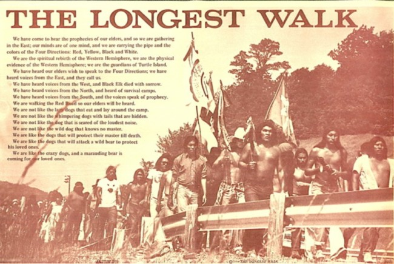

“We’re Fighting for Our Survival”
On February 11, 1978, more than 300 Native Americans gathered on Alcatraz Island. A peace pipe was passed among the crowd, while a medicine man spoke and others beat drums. The ceremony marked the beginning of a five-month pilgrimage of Native American activists to Washington, D.C., the fourth in ten years. In a demonstration they called the Longest Walk, twenty-four Indians planned to walk the entire distance from California to the nation’s capital, to be joined by supporters along the way and at their destination. Once in D.C., they would engage in eight days of demonstrations, protests, religious ceremonies, and educational workshops.
The Longest Walk was conceived as both a spiritual and political demonstration. Adding to the general call for sovereignty behind the previous demonstrations, the Longest Walk protested eleven pieces of legislation then being considered by Congress that would violate various treaty rights, particularly concerning Indian land, fishing, and mineral rights. The demonstrations were also an opportunity to educate non-Indians about Indian cultural and spiritual life.
Drawing on the traditions and movements of the past, the Longest Walk pointed toward the future and a new era in Native American struggles for survival.
The Evolving Struggle for Native American Rights
By 1978, the pilgrimage to the nation’s capital had become a well-established format for Native activists seeking change to federal Indian policy. But the Longest Walk marked a clear evolution in struggle for Native American rights. Much had changed in the decade since American Indian activists had joined the Poor People’s Campaign in 1968. Years of activism had brought an end to the destructive federal policy of termination, and some measures had even been taken to begin to reverse the damages done in the past.
The movement itself had also evolved. During the Poor People’s Campaign, activists had struggled to distinguish their struggle for sovereignty from the Civil Rights struggle with which the American public was more familiar. By 1978, American Indian activists had developed a clear and effective message, which both clarified the issue of sovereignty for the American public and mobilized Native Americans across the country. That message identified colonialism as the problem and sovereignty as the solution. With this more sophisticated understanding of Native struggles, moreover, Native activists in the United States increasingly saw themselves engaged in a common struggle with colonized people the world over and began working toward a hemispheric movement of indigenous peoples. In 1974, AIM called for the formation of the International Indian Treaty Council (IITC), an organization of Indigenous peoples from North, Central, and South America. The year before the Longest Walk, the United Nations recognized the IITC, giving Indigenous peoples a voice on the world stage.[1]
But for all that had changed in the previous decade, much had remained the same. As Native American activists gained strength in their calls for recognition of their treaty rights over the previous ten years, they summoned a backlash from many state governments and private interests who proposed laws to develop the land and resources belonging to Indian communities. One such law was the Native American Equal Opportunity Act, a law that, if passed, would revoke all treaties entered into between the United States and any Indian tribe.[2] Other proposed bills would allow for the extraction of oil and mineral resources from Native lands and strip Native nations of the hunting, fishing, land, and water rights for which they had fought so hard.
The Road to Washington
After the opening ceremony on Alcatraz Island, the demonstrators officially embarked from Sacramento. At a rally across the street from the state Capitol, march organizer Dennis Banks told a crowd of several hundred, “We are forced to walk for survival.”[3] Banks, who had helped to found the American Indian Movement in 1968, had also been instrumental in organizing the 1972 Trail of Broken Treaties.
The Longest Walk proceeded with little fanfare until it reached Minneapolis, Minnesota. There the marchers constructed a sweat lodge and conducted traditional religious ceremonies at Fort Snelling State Park. They were joined students from the Heart of the Earth Survival School—a school founded by AIM in 1972. The students joined the marchers in a “Run for Survival,” running the 560 miles to Lawrence, Kansas in shifts with cars following beside them. Clyde Bellecourt, another veteran of the Trail of Broken Treaties, began contacting tribal councils along the march route, and soon supporters began joining in large numbers, joining in ceremonies and workshops to learn of the impending legislation. The also addressed the legislatures of the states they passed through. “We’d go into the halls of government with a drum and sing our ceremonial songs and the AIM national anthem,” Bellecourt recalled years later. “Then we’d make a presentation, stressing the importance of the Indian Religious Freedom Act, a bill that was moving through Congress at the time that would legalize Native American spiritual practices. We also asked for their support in killing congressional action that would abrogate our treaties.”[4]
“Welcome to Indian Country!”[5]
On July 15, 1978, the Longest Walk arrived in Washington, D.C. The original group of 24 was accompanied by some 2,000 supporters as they marched into the city. Their solemn march through the capital was accompanied by the beat of a drum. Surrounded by police and security guards, the demonstration proceeded down Georgia and Arkansas avenues, then 16th Street NW to Meridian Hill Malcolm X Park, where they rallied to a group of Black, white, and Indian supporters, now numbering 3,000. “Welcome to Indian country!” shouted Longest Walk organizer Bill Means to the assembled crowd.
Joining the demonstrators were comedian Dick Gregory and actor Marlon Brando, both long-time supporters of Indian sovereignty. Clyde Bellecourt reminded everyone present what was at stake: “The multinational corporations want our land,” he said. “They want uranium, coal, lignite that’s under our land…The theft that took place 150 years ago of our farmlands and timber is no different from today.”[6]
An estimated 2,800 participants camped at Greenbelt Park in Prince George’s County, roughly twelve miles from downtown Washington. Over the following week, they would come into the city each day, holding rallies, marches, and religious ceremonies. They demonstrated before Congress, the White House, the Supreme Court, and the FBI building on the legislation in Congress. Meanwhile, a group of 200 to 300 religious leaders maintained a four-day vigil at a separate spiritual camp in West Potomac Park near the Lincoln Memorial, the former site of Resurrection City. Marked by tipis on the National Mall, the vigil site cut a striking image on America’s most iconic landscape.
The week of demonstrations concluded with a powwow on the Ellipse behind the White House on July 22, marking a vibrant end to the peaceful demonstration. Though they had faced a cold reception from Congress and the administration, many were encouraged by the experience. “I feel that we have reached and educated millions of people. That was what the walk was about. It was a tremendous success.”[7]
As if to emphasize that success, Congress passed the American Indian Religious Freedom Act just days after their arrival, followed a few months later by the Indian Child Welfare Act, both critical laws in protecting Native American rights and freedoms. And of the eleven pieces of legislation that the demonstrators had come to protest, not one would be passed.
A Tale of Two Marches
There was a striking contrast between the Longest Walk and the Trail of Broken Treaties in 1972, particularly in the government’s response to the demonstrators. In the earlier demonstration, the government had closed ranks against the marchers and refused to meet with them. The situation escalated until the occupation of BIA.
By contrast, in the Longest Walk, the government welcomed the demonstrators with open arms. The National Park Service cleared the way for the large encampment on Greenbelt Park and rapidly approved the vigil site in West Potomac Park. The National Guard provided logistical assistance, setting up a mess tent to feed the demonstrators in Greenbelt Park and installing portable showers and toilets. The Guard also set up army tents and a portable clinic to house and care for the marchers.[8
]How to account for the different response? A lot of it had to do with the work that AIM and other Native American activists had been doing across the country in raising awareness and working to address the problems in Indian communities across the country. Six years after the Trail of Broken Treaties, Native Americans marched into a different Washington, one that was ready to begin to acknowledge the wrongs of the past.
That work continues today.
[1] Clyde Bellecourt, The Thunder Before the Storm: The Autobiography of Clyde Bellecourt (St. Paul: Minnesota Historical Society Press, 2016), 203.
[2] “Indians Begin Protest With Rally on Alcatraz,” Hartford Courant, 12 Feb 1978.
[3] “Hundreds of Indians Hold California Rally,” Shreveport Times, 12 Feb 1978.
[4] Bellecourt, The Thunder Before the Storm, 249-250.
[5] Bill Means shouted “Welcome to Indian Country!” as the caravan marched to the Washington Monument. As reported by Paul W. Valentine, “Indians’ Walk Reaches Washington,” Washington Post, 15 July 1978.
[6] Paul W. Valentine and Patricia Camp, “Indians March Into Capital: Indians Reach D.C., End Longest Walk,” Washington Post, 16 July 1978.
[7] Ellen Hume, “'Long Walk' a First Step, Indians Say,” Los Angeles Times, 23 July 1978.
[8] Paul W. Valentine, “Indians Leave Baffled Bureaucrats,” Washington Post, 24 July 1978.
